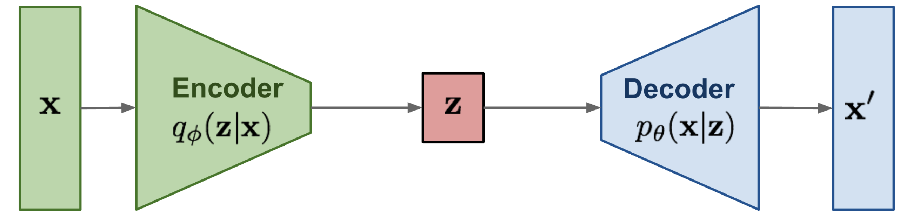
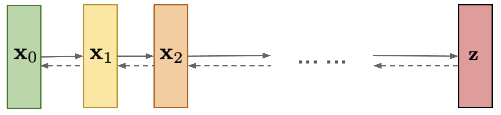

Denoising Diffusion Probabilistic Models
As seen in the case of Variational Autoencoders, it all boils down to learning the probability distributions - \(p(\textbf{z} | \textbf{x})\) the posterior abstraction of obtaining a hidden representation \(\textbf{z}\) given some input image \(\textbf{x}\) and the likelihood \(p(\textbf{x} | \textbf{z})\) of generating the image samples given some hidden representation \(\textbf{z}\).
Now the most crucial task in all these generative models is trying to understand to relate the objective that we are trying to acheive and what the model actually learns. We’ll see the same confusing conclusion being established by the end of this blog and then we’ll realise how beautifully all the mathematics and the tasks laid out make sense.
Throwback to Variational Autoencoders
Like in the case of VAEs[1], we started off by approximating the actual \(P(\textbf{z} | \textbf{x})\) through our probabilistic Encoder \(Q_{\phi}(\textbf{z} | \textbf{x})\) and minimising the KL divergence between these two. But in order to establish the knowledge of the actual \(P(\textbf{z} | \textbf{x})\), we went into maximising the log-likelihood of data samples \(\textbf{x}\) and eventually made the encoder learn this distribution \(Q_{\phi}(\textbf{z} | \textbf{x})\) to be as close to the standard normal \(\mathcal{N}(\textbf{0}, \mathbb{I})\) as possible. Hence now drawing any \(\textbf{z} \sim \mathcal{N}(\textbf{0}, \mathbb{I})\) we are sure of it being close to the \(\textbf{z}\)’s seen during training, allowing us to discard off the encoder entirely at inference. The way we setup the objective of making the actual and approximated distribution close to each other will stay same for Diffusion Models too and this would allow us to uncover more truth about the actual distribution itself.

Graphical Model of a Variation Autoencoder.
Adapted from [2].
What are Diffusion Models?
For Diffusion Models instead of one latent variable \(\textbf{z}\), we have \(T\) latent variables of the form \(\textbf{x}_1, \textbf{x}_2, \cdots , \textbf{x}_T\) of same dimension as the input image \(\textbf{x}_0\), and the most interesting point is that the forward noising process is a deterministic Markov Chain, wherein Gaussian noise is added in gradual \(T\) steps, defined as:
\[ \boxed{q(\textbf{x}_t | \textbf{x}_{t - 1}) = \mathcal{N}(\textbf{x}_{t}; \sqrt{1 - \beta_{t}} \textbf{x}_{t - 1}, \beta_{t} \mathbb{I})} \]
Here the variances are controlled by a scheduler \(\left \{ \beta_t \in (0, 1) \right \}_{t = 1}^T\), which means for each noisy sample \(\textbf{x}_t\) is sampled from a Gaussian with \(\mathbf{\mu}_q = \sqrt{1 - \beta_{t}} \textbf{x}_{t - 1}\) and covariance matrix \(\mathbf{\Sigma}_q = \beta_{t} \mathbb{I}\). The idea is then to learn the reverse denoising diffusion distribution \(q(\textbf{x}_{t - 1} | \textbf{x}_t)\), which is also a Markov Chain with learned Gaussian transitions[3] starting at \(p(\textbf{x}_T) \sim \mathcal{N}(\textbf{x}_T; \textbf{0}, \mathbb{I})\). Therefore it then becomes really important to understand the entire joint distribution \(p(\textbf{x}_1, \textbf{x}_2, \cdots, \textbf{x}_T)\) denoted in shorthand as \(p(\textbf{x}_{0:T})\)

Graphical Model of a Diffusion Process.
Adapted from [2].
Prerequisites
Joint & Conditional Distribution of \(N\) RVs and Bayes’ Rule
A joint distribution over \(N\) random variables assigns probabilities to all the events involving these \(N\) random variables1, denoted as
\[ P(X_1, X_2, X_3, \cdots, X_N) \]
Now starting off with just two RVs, the conditional probabilities \(P(X_1 | X_2)\) and \(P(X_2 | X_1)\) can be calculated from the joint distribution as:
\[ \begin{align} P(X_1 | X_2) = \frac{P(X_1, X_2)}{P(X_2)} && P(X_2 | X_1) = \frac{P(X_1, X_2)}{P(X_1)} \end{align} \]
Conveniently this allows us to write \(P(X_1, X_2) = P(X_2 | X_1) P(X_1)\). And similarly for \(N\) random variables
\[ \begin{align} P(X_1, X_2, X_3, \cdots, X_N) &= P(X_2, X_3, \cdots, X_N | X_1) \cdot P(X_1) \\ &= P(X_3, \cdots, X_N | X_1, X_2) \cdot P(X_2 | X_1) \cdot P(X_1) \\ &= P(X_4, \cdots, X_N | X_1, X_2, X_3) \cdot P(X_3 | X_2, X_1) \cdot P(X_2 | X_1) \cdot P(X_1) \end{align} \]
Expanding by chain rule we get \[ \boxed{P(X_1, X_2, X_3, \cdots, X_N) = P(X_1) \cdot \prod_{i = 2}^{N} P(X_i | X_1^{i - 1})} \]
where \(X_1^{i - 1} = X_1, X_2, X_3, \cdots, X_{i - 1}\) and then using the joint-conditional-marginal formula, we get the Bayes’ Rule as
\[ P(X_2 | X_1) = \frac{P(X_1 | X_2) \cdot P(X_2)}{P(X_1)} \]
Markov-Diffusion Process and Reparametrization
The special property of a Markov Process is that the future state is dependent only on previous state, which means
\[ P(\textbf{x}_t | \textbf{x}_{t - 1}, \cdots, \textbf{x}_0) = P(\textbf{x}_t | \textbf{x}_{t - 1}) \]
the utility of this is that using the chain rule of joint probability, we may simply write for all our diffusion process forward steps \(q(\textbf{x}_{1 : T} | \textbf{x}_0)\) as
\[ \begin{align} q(\textbf{x}_{1 : T} | \textbf{x}_0) = \prod_{t = 1}^{T} q(\textbf{x}_t | \textbf{x}_{t - 1}) && q(\textbf{x}_t | \textbf{x}_{t - 1}) = \mathcal{N}(\textbf{x}_{t}; \sqrt{1 - \beta_{t}} \textbf{x}_{t - 1}, \beta_{t} \mathbb{I}) \end{align} \]
Diffusion is the process of converting samples from a complex distribution (the data here) \(\textbf{x}_0 \sim q(\textbf{x}_0)\) to samples of a simple distribution (isotropic Gaussian noise) \(\textbf{x}_T \sim \mathcal{N}(\textbf{0}, \mathbb{I})\). One can also observe that there is a \(\color{purple}{\text{deterministic}}\) and a \(\color{blue}{\text{stochastic}}\) component even in our case. Since any RV can be reparametrized as \(Z = \sigma X + \mu\), hence we denote the \(\textbf{x}_t\) being drawn from \(q(\textbf{x}_t | \textbf{x}_{t - 1})\) as
\[ \boxed{\textbf{x}_t = \color{purple}{\sqrt{1 - \beta_t} \textbf{x}_{t - 1}} + \color{blue}{\sqrt{\beta_t} \epsilon_{t - 1}}} \]
where \(\epsilon_{t - 1}, \epsilon_{t - 2}, \cdots \sim \mathcal{N}(\textbf{0}, \mathbb{I})\)

Forward and Reverse Diffusion Processes.
Adapted from [3].
Understanding the Forward Markov Process
One might wonder why does following the above said markov chain of gaussians lead to \(\textbf{x}_T \sim \mathcal{N}(\textbf{0}, \mathbb{I})\). To understand this let’s take arbitrary constants for the above
\[ \textbf{x}_t = \sqrt{\alpha} \textbf{x}_{t - 1} + \sqrt{\beta} \epsilon_{t - 1} \]
Since we know that \(\textbf{x}_T \sim \mathcal{N}(\textbf{0}, \mathbb{I})\) so let’s open up the formula from this end
\[ \begin{align} \textbf{x}_T &= \sqrt{\alpha} \textbf{x}_{T - 1} + \sqrt{\beta} \mathcal{N}(\textbf{0}, \mathbb{I}) \\ &= \sqrt{\alpha} (\sqrt{\alpha} \textbf{x}_{T - 2} + \sqrt{\beta} \mathcal{N}(\textbf{0}, \mathbb{I})) + \sqrt{\beta} \mathcal{N}(\textbf{0}, \mathbb{I}) \\ &= (\sqrt{\alpha})^2 \textbf{x}_{T - 2} + \sqrt{\alpha} \sqrt{\beta} \mathcal{N}(\textbf{0}, \mathbb{I}) + \sqrt{\beta} \mathcal{N}(\textbf{0}, \mathbb{I}) \\ \cdots \\ &= (\sqrt{\alpha})^T \textbf{x}_0 + \sqrt{\beta} ((\sqrt{\alpha})^{T - 1} \mathcal{N}(\textbf{0}, \mathbb{I}) + (\sqrt{\alpha})^{T - 2} \mathcal{N}(\textbf{0}, \mathbb{I}) + \cdots + \mathcal{N}(\textbf{0}, \mathbb{I})) \end{align} \]
We can combine the independent Gaussians into one Gaussian2 as they have variances as \((\beta \alpha^{T - 1}, \beta \alpha^{T - 2}, \cdots, \beta \alpha, \beta)\) with \(\sigma^2 = \beta \frac{1 - \alpha^T}{1 - \alpha}\). Notice that as \(T \to \infty, (\sqrt{\alpha})^T \to 0\) and \(\textbf{x}_T \to \mathcal{N}(\textbf{0}, \mathbb{I})\) only when \(\alpha = 1 - \beta\).
Do we traverse for all \(T\) steps?
Certainly Not! Here’s how the Markov Process allows us to reach any \(\textbf{x}_t\) from the image \(\textbf{x}_0\). Let \(\alpha_t = 1 - \beta_t\)
\[ \begin{align} \textbf{x}_t &= \sqrt{\alpha_t} \textbf{x}_{t - 1} + \sqrt{1 - \alpha_t} \mathcal{N}(\textbf{0}, \mathbb{I}) \\ &= \sqrt{\alpha_t} (\sqrt{\alpha_{t - 1}} \textbf{x}_{t - 2} + \sqrt{1 - \alpha_{t - 1}} \mathcal{N}(\textbf{0}, \mathbb{I})) + \sqrt{1 - \alpha_t} \mathcal{N}(\textbf{0}, \mathbb{I}) \\ &= (\sqrt{\alpha_t \alpha_{t - 1}}) \textbf{x}_{t - 2} + (\sqrt{\alpha_t} \sqrt{1 - \alpha_{t - 1}}) \mathcal{N}(\textbf{0}, \mathbb{I}) + (\sqrt{1 - \alpha_t}) \mathcal{N}(\textbf{0}, \mathbb{I}) \end{align} \]
Combine the independent Gaussians with \(\sigma^2 = \alpha_t (1 - \alpha_{t - 1}) + (1 - \alpha_t) = 1 - \alpha_t \alpha_{t - 1}\), hence
\[ \begin{align} \textbf{x}_t &= (\sqrt{\alpha_t \alpha_{t - 1}}) \textbf{x}_{t - 2} + (\sqrt{1 - \alpha_t \alpha_{t - 1}})\mathcal{N}(\textbf{0}, \mathbb{I}) \\ \cdots \\ &= (\sqrt{\alpha_t \alpha_{t - 1} \cdots \alpha_2 \alpha_1}) \textbf{x}_0 + (\sqrt{1 - \alpha_t \alpha_{t - 1} \cdots \alpha_2 \alpha_1}) \mathcal{N}(\textbf{0}, \mathbb{I}) \end{align} \]
With \(\bar{\alpha_t} = \prod_{i = 1}^{t} \alpha_i\), we finally get
\[ \boxed{\textbf{x}_t = (\sqrt{\bar{\alpha_t}}) \textbf{x}_0 + (\sqrt{1 - \bar{\alpha_t}}) \mathcal{N}(\textbf{0}, \mathbb{I})} \]
\[ \boxed{q(\textbf{x}_t | \textbf{x}_0) = \mathcal{N}(\textbf{x}_t; (\sqrt{\bar{\alpha_t}}) \textbf{x}_0, (1 - \bar{\alpha_t}) \mathbb{I})} \]
The Crucial Reverse Diffusion Process
text here
References
Footnotes
\(k^N\) values if each RV can take \(k\) values↩︎
Two Gaussians with different variances, \(\mathcal{N}(\textbf{0}, \sigma_1^2\mathbb{I})\) and \(\mathcal{N}(\textbf{0}, \sigma_2^2\mathbb{I})\) can be merged to a new Gaussian distribution \(\mathcal{N}(\textbf{0}, (\sigma_1^2 + \sigma_2^2)\mathbb{I})\)↩︎